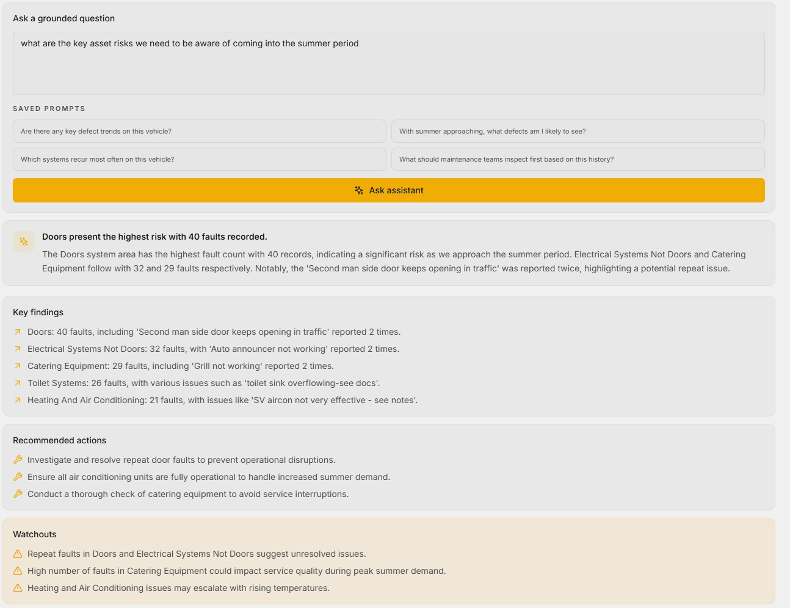
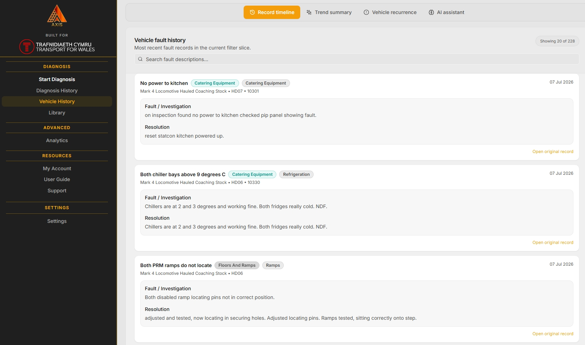
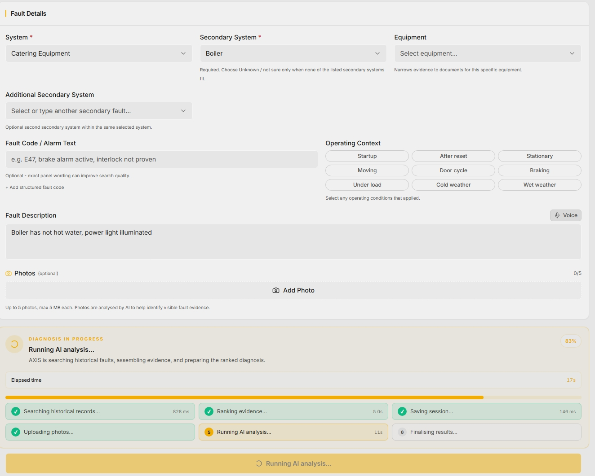
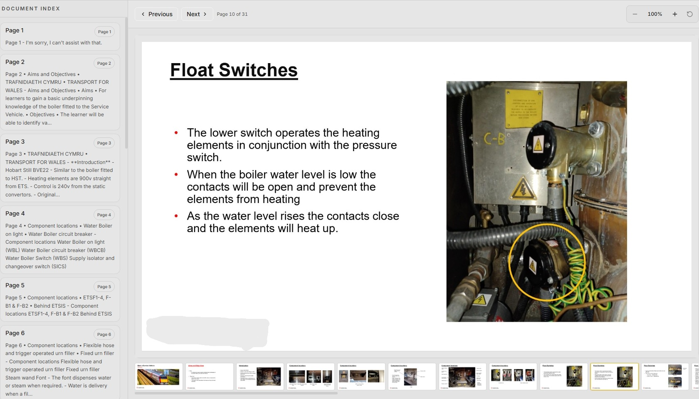
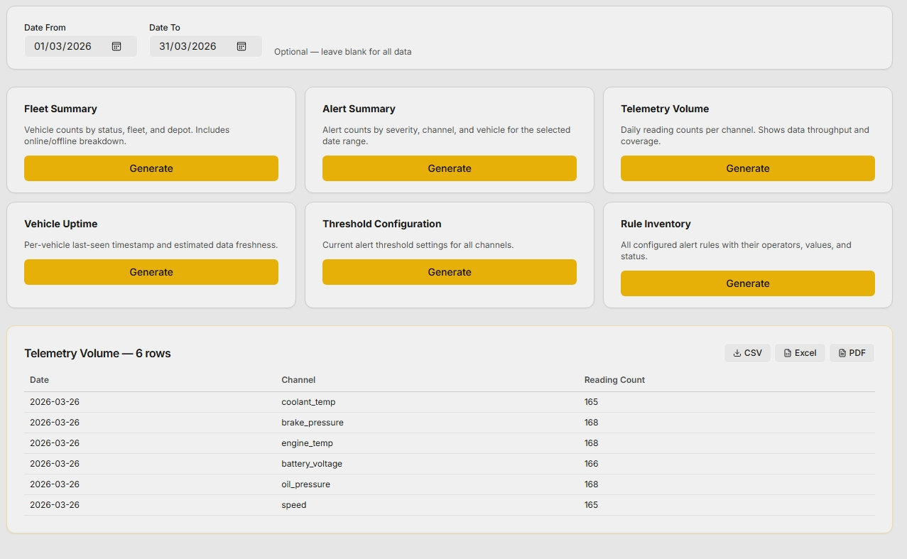
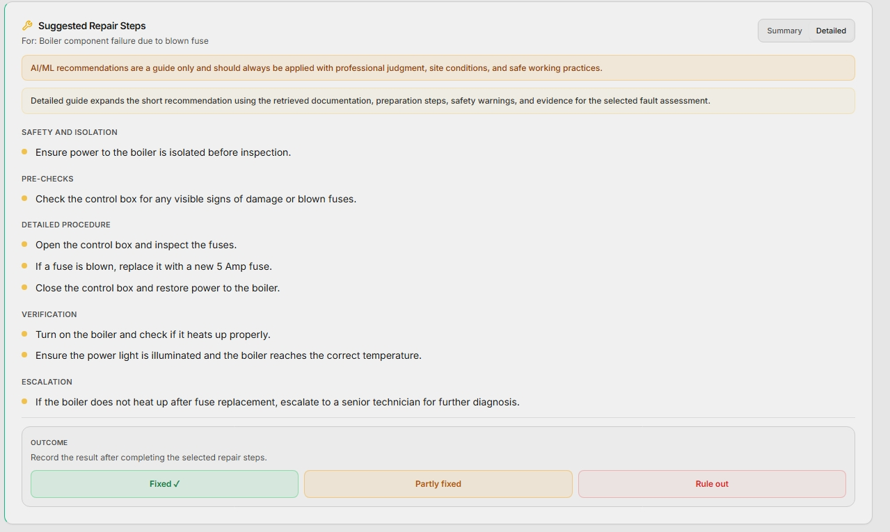
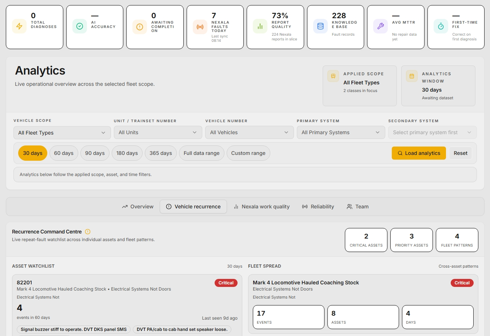
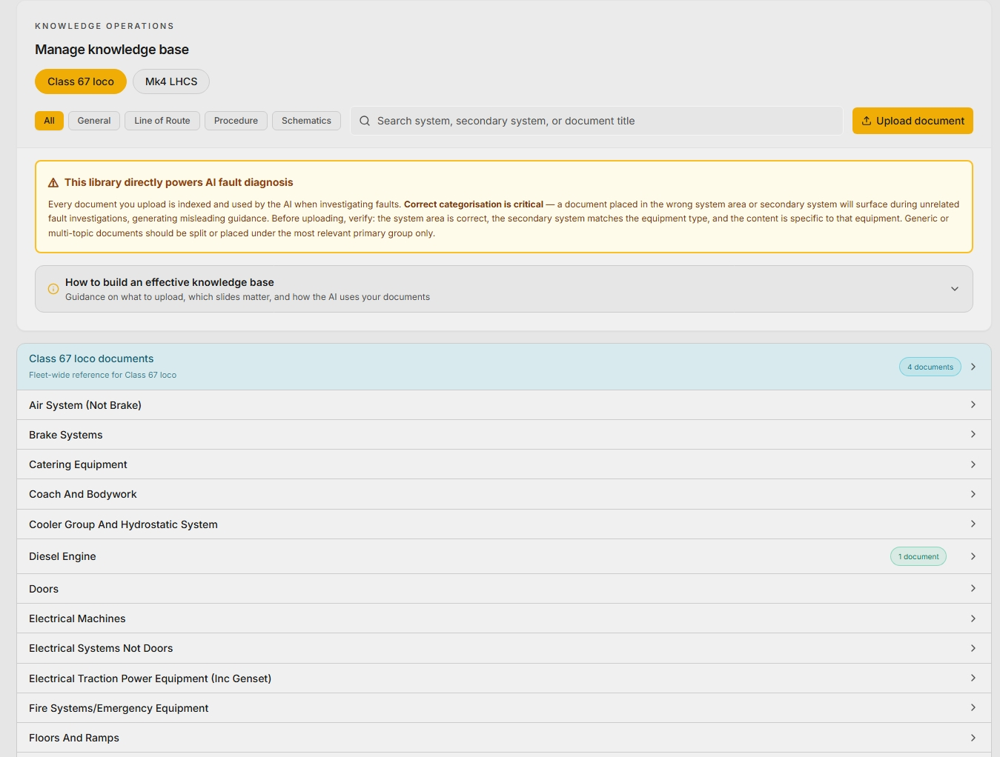

AI-Powered, Maintenance Intelligence Platform
Axis is an AI fault intelligence platform that detects, predicts, and prevents asset failures before they cause operational disruption. Built on machine learning, historical data and real-time sensor data, it suggests root causes, prioritises corrective actions, and drives operational excellence… It's like having a team of your very best engineers at the click of a button!


Built by engineers, for engineers who keep things running!
From AI fault prediction to guided repair steps and field-ready mobile access, Axis gives your maintenance and operations teams the intelligence to act with certainty.
Predict failures before they happen.
Axis applies machine learning models trained on your own historical fault data and optional real-time sensor feeds to generate accurate failure probability scores across your asset portfolio. The more it runs, the sharper it gets; getting better with every fault recorded and every repair completed.
- ML models trained on your own historical fault and maintenance records
- Real-time sensor integration surfaces developing anomalies early
- Failure probability scores and predicted windows updated continuously

Every schematic and bulletin.
Surfaced at the right moment.
When Axis identifies a fault, it automatically retrieves and links the relevant asset documentation, technical schematics, and manufacturer bulletins, presenting them alongside AI-suggested repair steps so engineers have everything they need without leaving the platform or searching manually.
- Auto-links to asset schematics and technical documentation at point of fault detection
- Manufacturer bulletins and service notices surfaced per asset and fault type
- Engineers arrive on-site fully briefed; no manual searching, no lost documentation

Built for the job.
Not just the desk.
Axis is engineered for use in the field; a fully responsive interface optimised for mobile and tablet so engineers can access fault queues, asset documentation, repair steps, and AI insights wherever the work happens. Full platform capability, in the palm of your hand.
- Fully responsive interface optimised for mobile and tablet use in the field
- Access fault queues, documentation, and step-by-step repair guides on the go
- Real-time AI alerts and fault updates delivered directly to the device

The intelligence technical teams need,
presented in the way they work
Whether you're a maintenance engineer following guided repair steps, an analyst reviewing asset insights, or a manager ensuring no expertise is ever lost..... Axis gives you the right tools.

Step-by-step repair guidance at the point of need
Axis generates structured, AI-guided repair steps alongside each fault, drawing on historical resolutions, manufacturer guidance, and accumulated engineering expertise. Engineers spend less time diagnosing and more time fixing.

Data analytics and intelligent insights across every asset
Customisable analytics dashboards give management a clear view of asset health trends, fault frequency, and maintenance performance across the estate. Use the AI Workspace to analyse thousands of asset records and fault history, and gain invaluable insights in an instant.

Your best engineers' knowledge; locked in, never lost
Every fault diagnosis, repair decision, and engineering insight is captured and retained within Axis. When an engineer or technician moves on, their expertise stays, embedded in the platform and available to every team member who comes after them.
Built to prevent failures.
Designed to preserve expertise.
Axis is designed for organisations where asset reliability, maintenance efficiency, and operational knowledge are critical to improving operational excellence and asset performance.
By combining machine learning trained on your own historical data, real-time sensor monitoring, automated documentation linking, and AI-guided repair steps; all in a platform built to be used in the field. Axis transforms how maintenance teams find, diagnose, and fix faults. Teams act earlier, engineers have everything they need at the point of need, and the organisation never loses the knowledge its best people carry.
This helps organisations reduce unplanned downtime, extend asset life, and retain the institutional knowledge that keeps operations running.... regardless of team changes or inconsistencies.